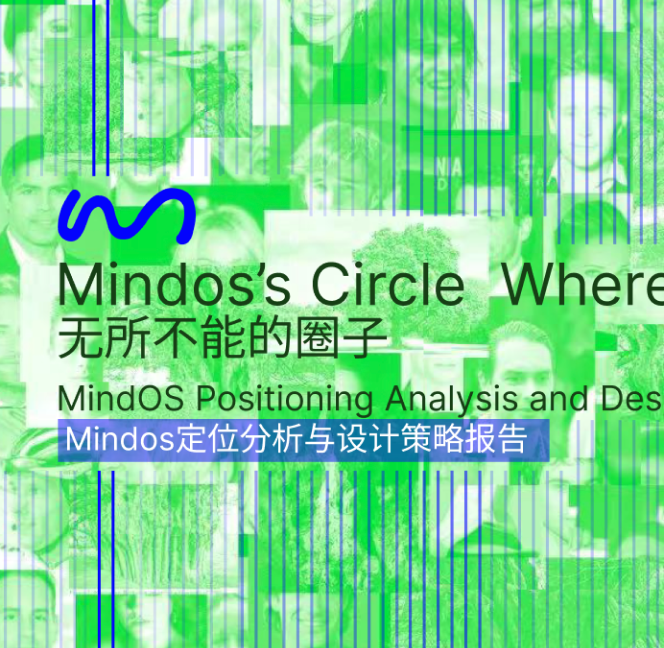
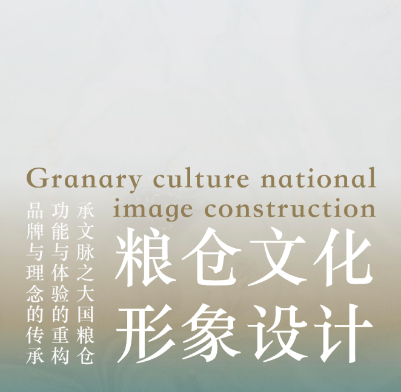
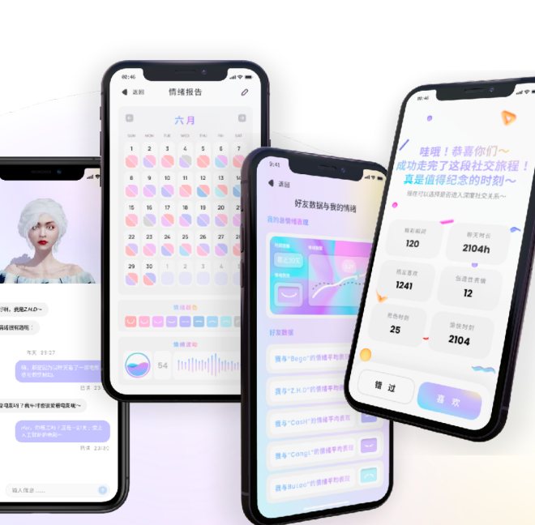

LUO SHAN
luoshan3398@qq.com
This category is presented
with "events" as the main focus, including the design strategy
report analysis for the former company, how can an AI startup win?
The cultural image design strategy for a granary done for the
government, researching what today's granary image should look like?
A product that was not successfully incubated at an OPPO workshop,
exploring how to solve the latency of emotional expression in
different spaces?
这个类别呈现的是以“事件”为主，包括给前司做的设计策略报告分析，一个AI初创公司如何赢？给政府做的粮仓文化形象设计策略，研究今天的粮仓形象应该是什么样貌？一个在OPPO工作坊上未孵化成功的产品，探究情绪表达在不同空间上的延时性如何解决？


